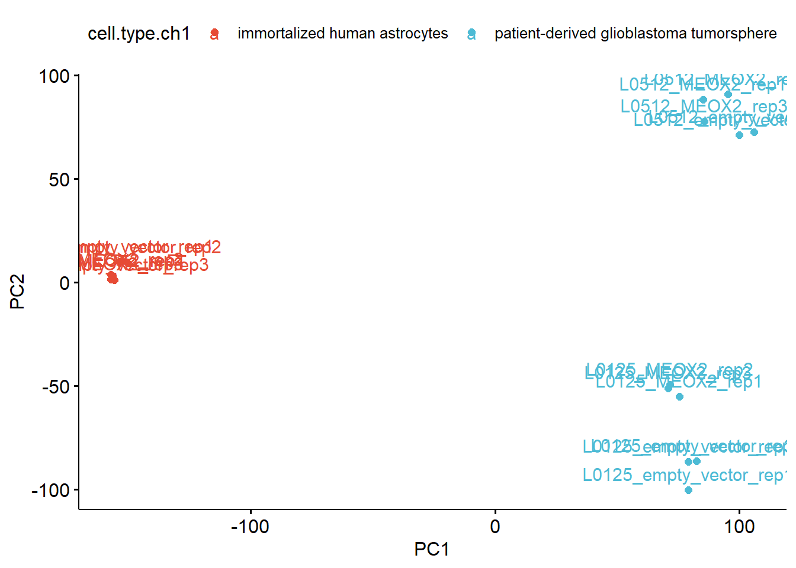
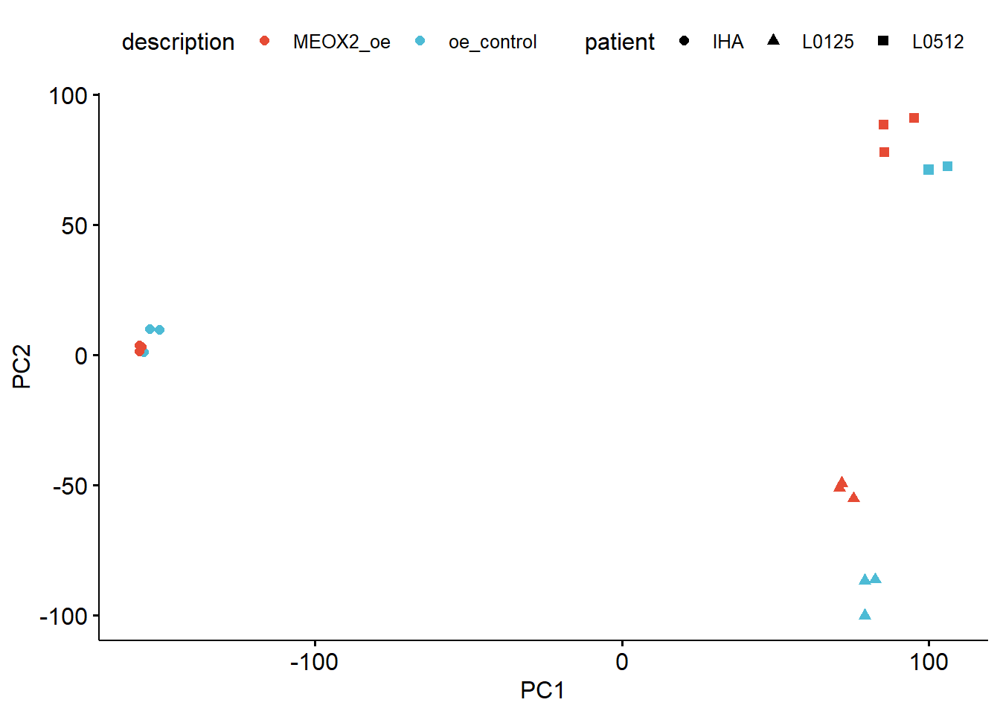
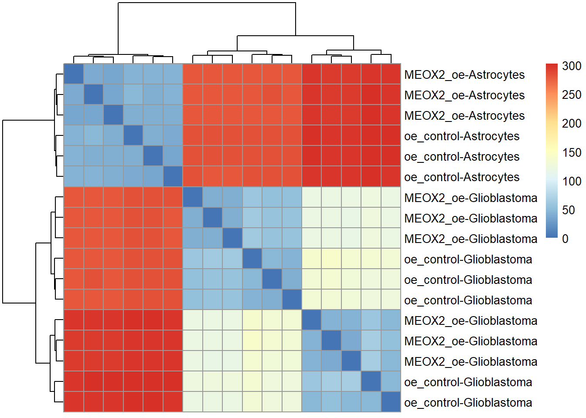

RNASeq data analysis
Reka_Toth
03 June, 2024
Last updated: 2024-06-03
Checks: 6 1
Knit directory: ROmics/
This reproducible R Markdown analysis was created with workflowr (version 1.7.0.4). The Checks tab describes the reproducibility checks that were applied when the results were created. The Past versions tab lists the development history.
The R Markdown file has unstaged changes. To know which version of
the R Markdown file created these results, you’ll want to first commit
it to the Git repo. If you’re still working on the analysis, you can
ignore this warning. When you’re finished, you can run
wflow_publish to commit the R Markdown file and build the
HTML.
Great job! The global environment was empty. Objects defined in the global environment can affect the analysis in your R Markdown file in unknown ways. For reproduciblity it’s best to always run the code in an empty environment.
The command set.seed(20230606) was run prior to running
the code in the R Markdown file. Setting a seed ensures that any results
that rely on randomness, e.g. subsampling or permutations, are
reproducible.
Great job! Recording the operating system, R version, and package versions is critical for reproducibility.
Nice! There were no cached chunks for this analysis, so you can be confident that you successfully produced the results during this run.
Great job! Using relative paths to the files within your workflowr project makes it easier to run your code on other machines.
Great! You are using Git for version control. Tracking code development and connecting the code version to the results is critical for reproducibility.
The results in this page were generated with repository version b0e0570. See the Past versions tab to see a history of the changes made to the R Markdown and HTML files.
Note that you need to be careful to ensure that all relevant files for
the analysis have been committed to Git prior to generating the results
(you can use wflow_publish or
wflow_git_commit). workflowr only checks the R Markdown
file, but you know if there are other scripts or data files that it
depends on. Below is the status of the Git repository when the results
were generated:
Ignored files:
Ignored: .Rhistory
Ignored: .Rproj.user/
Ignored: analysis/.Rhistory
Untracked files:
Untracked: Course_plans.docx
Untracked: analysis/integration.Rmd
Untracked: data/10_x_pbmc/
Untracked: data/GSM7446496_SMAD3_U3008_01_noIgG.bed.gz
Untracked: data/cell_cycle_vignette_files.zip
Untracked: data/idat/
Untracked: data/integration/
Untracked: data/mm9_Refseq_chr12.tsv
Untracked: data/normalized_rnb.set.RDS
Untracked: data/raw_rnb.set.RDS
Untracked: data/raw_rnbset_GSE175758.RDS
Untracked: data/sample_annotation.csv
Untracked: data/seurat_pbmc.RDS
Untracked: output/Thumbs.db
Untracked: output/diffmeth/
Untracked: output/~$Genomic data.pptx
Unstaged changes:
Modified: analysis/GRanges.Rmd
Modified: analysis/GRanges_solutions.Rmd
Modified: analysis/S4_objects.Rmd
Modified: analysis/gene_expression.Rmd
Modified: analysis/methylation_plots.Rmd
Modified: analysis/reproducible_programming.Rmd
Modified: analysis/rtracklayer.Rmd
Modified: analysis/scRNA_seq.Rmd
Modified: code/rnb_analysis.R
Note that any generated files, e.g. HTML, png, CSS, etc., are not included in this status report because it is ok for generated content to have uncommitted changes.
These are the previous versions of the repository in which changes were
made to the R Markdown (analysis/gene_expression.Rmd) and
HTML (docs/gene_expression.html) files. If you’ve
configured a remote Git repository (see ?wflow_git_remote),
click on the hyperlinks in the table below to view the files as they
were in that past version.
| File | Version | Author | Date | Message |
|---|---|---|---|---|
| html | dc24f69 | tkik | 2023-06-14 | Build site. |
| Rmd | fb9b64e | tkik | 2023-06-14 | wflow_publish("analysis/gene_expression.Rmd") |
Steps of analysing gene expression data
Read in counts to R
Normalize dataset
Visualize - dimensionality reduction, clustering, correlation plots
Differential expression analysis (batch effects)
Visualization of the results - volcano plot, dotplot, heatmaps, glimma plots
Enrichment and pathway analysis
library(tidyverse)
library(GEOquery)
library(DESeq2)
library(ggfortify)
library(ggpubr)
library(ggsci)
library(Glimma)
library(corrplot)
library(sva)
library("AnnotationDbi")
library("org.Hs.eg.db")
library("clusterProfiler")
library(pheatmap)
library(DOSE)
library(enrichplot)
library(topGO)cat("## Download an example dataset from GEO \n")Download an example dataset from GEO
# load counts table from GEO
#urld <- "https://www.ncbi.nlm.nih.gov/geo/download/?format=file&type=rnaseq_counts"
#path <- paste(urld, "acc=GSE181144", "file=GSE181144_raw_counts_GRCh38.p13_NCBI.tsv.gz", sep="&");
#tbl <- as.matrix(data.table::fread(path, header=T, colClasses="integer"), rownames=1)
#write.table(tbl, file="data/count_data.txt", sep="\t", row.names = T, col.names=T, quote = F)
# clear the sample annotation
data <- getGEO('GSE181144')
metadata <- data$GSE181144_series_matrix.txt.gz@phenoData@data
phenodata <- metadata[,c("title", "geo_accession", "source_name_ch1", "cell type:ch1", "tissue:ch1", "treatment:ch1", "description", "characteristics_ch1")]
gene_count_matrix <- read.table("data/count_data.txt", header = T, row.names=1)
cat("Filtering the dataset, so only two groups are included - for the sake of simplicity. \n")Filtering the dataset, so only two groups are included - for the sake of simplicity.
phenodata <- phenodata %>%
filter(grepl("overexpression", description)) %>%
rename_with(~ gsub(" |:", ".", .x)) %>%
mutate(description=gsub(" ", "_", description)) %>%
mutate(description=gsub("overexpression", "oe", description))
cat("The correct order has to be given! \n")The correct order has to be given!
gene_count_matrix <- gene_count_matrix[,rownames(phenodata)]
cat("Exclude the genes not expressed in any of the samples or lowly expressed in the whole dataset.")Exclude the genes not expressed in any of the samples or lowly expressed in the whole dataset.
gene_count_matrix <- gene_count_matrix[rowSums(gene_count_matrix)>10,]
cat("Although DeSeq2 only works with count (integer) data, pseudocounts from other software tools - salmon, rsem, kallisto - have functions to read in in the tximport package. ")Although DeSeq2 only works with count (integer) data, pseudocounts from other software tools - salmon, rsem, kallisto - have functions to read in in the tximport package.
cat("")
dds <- DESeqDataSetFromMatrix(countData = gene_count_matrix,
colData = phenodata,
design = ~ description)
cat("Keep an eye on the reference level!")Keep an eye on the reference level!
dds <- DESeq(dds)
vsd <- vst(dds)
ge_mat <- assay(vsd)
#rlog(dds)
#counts(dds, normalized=TRUE)
cat("technical replicates are easy to collapse, using collapseReplicates function. ")technical replicates are easy to collapse, using collapseReplicates function.
Visualizing the dataset using dimensionality reduction algorithms
PCA plot
pca_res <- prcomp(t(ge_mat), scale. = TRUE)
pca_plot <- as.data.frame(cbind(pca_res$x,colData(dds)))
ggpubr::ggscatter(pca_plot, x="PC1", y="PC2", color="description")
| Version | Author | Date |
|---|---|---|
| dc24f69 | tkik | 2023-06-14 |
ggpubr::ggscatter(pca_plot, x="PC1", y="PC2", color="cell.type.ch1", palette = "npg", size = 2, label = "title")
| Version | Author | Date |
|---|---|---|
| dc24f69 | tkik | 2023-06-14 |
pca_plot <- pca_plot %>%
mutate(patient= gsub("(.*)_(empty_vector|MEOX2)_(rep[[:digit:]])", "\\1", title))
ggpubr::ggscatter(pca_plot, x="PC1", y="PC2", color="cell.type.ch1", palette = "npg", size = 2, shape="patient")
| Version | Author | Date |
|---|---|---|
| dc24f69 | tkik | 2023-06-14 |
ggpubr::ggscatter(pca_plot, x="PC1", y="PC2", color="description", palette = "npg", size = 2, shape="patient")
| Version | Author | Date |
|---|---|---|
| dc24f69 | tkik | 2023-06-14 |
cat("Since we see now how much the cell type and the patient affect gene expression, we should add them to the model. \n")Since we see now how much the cell type and the patient affect gene expression, we should add them to the model. phenodata <- phenodata %>%
mutate(patient= gsub("(.*)_(empty_vector|MEOX2)_(rep[[:digit:]])", "\\1", title))
cat("The variable of interest should be the last one. ")The variable of interest should be the last one. dds <- DESeqDataSetFromMatrix(countData = gene_count_matrix,
colData = phenodata,
design = ~ patient + description)
dds <- DESeq(dds)
ge_mat <- getVarianceStabilizedData(dds)Interactive MDS plot
glMDSPlot(ge_mat, groups=dds$description, labels=dds$patient, launch=T, folder = "/glimma-plots")Correlation plots
corr = cor(ge_mat)
corrplot(corr)
| Version | Author | Date |
|---|---|---|
| dc24f69 | tkik | 2023-06-14 |
corrplot(corr, col.lim = c(min(corr), max(corr)), is.corr = F, tl.col = "black", tl.cex = 0.7)
| Version | Author | Date |
|---|---|---|
| dc24f69 | tkik | 2023-06-14 |
colnames(corr) <- dds$title
rownames(corr) <- dds$title
corrplot(corr, col.lim = c(min(corr), max(corr)), is.corr = F, tl.col = "black", tl.cex = 0.7)
| Version | Author | Date |
|---|---|---|
| dc24f69 | tkik | 2023-06-14 |
# sample distances
sampleDists <- dist(t(assay(vsd)))
library("RColorBrewer")
sampleDistMatrix <- as.matrix(sampleDists)
rownames(sampleDistMatrix) <- paste(vsd$description, vsd$source_name_ch1, sep="-")
colors <- colorRampPalette( rev(brewer.pal(9, "Blues")) )(255)
pheatmap(sampleDistMatrix,
clustering_distance_rows=sampleDists,
clustering_distance_cols=sampleDists, show_colnames = F)
Batch effect correction
adjusted <- ComBat_seq(counts = as.matrix(gene_count_matrix), batch = phenodata$cell.type.ch1)Found 2 batches
Using null model in ComBat-seq.
Adjusting for 0 covariate(s) or covariate level(s)
Estimating dispersions
Fitting the GLM model
Shrinkage off - using GLM estimates for parameters
Adjusting the datadds_combat = DESeq2::DESeqDataSetFromMatrix(countData = adjusted, colData = phenodata, design = ~ description)
dds_combat <- DESeq(dds_combat)
ge_mat_combat <- getVarianceStabilizedData(dds_combat)
pca_res <- prcomp(t(ge_mat_combat), scale. = TRUE)
pca_plot <- as.data.frame(cbind(pca_res$x,colData(dds_combat)))
ggpubr::ggscatter(pca_plot, x="PC1", y="PC2", color="description")
| Version | Author | Date |
|---|---|---|
| dc24f69 | tkik | 2023-06-14 |
ggpubr::ggscatter(pca_plot, x="PC1", y="PC2", color="cell.type.ch1", palette = "npg", size = 2, shape="description")
| Version | Author | Date |
|---|---|---|
| dc24f69 | tkik | 2023-06-14 |
Differential gene expression analysis
DEresults = results(dds)
#DEresults2 = results(dds, contrast = c("description", "oe_control", "MEOX2_oe"))
ggpubr::gghistogram(as.data.frame(DEresults), x="pvalue", bins = 100)
| Version | Author | Date |
|---|---|---|
| dc24f69 | tkik | 2023-06-14 |
Change the gene identifiers to something more intuitive
gene_anno <- data.frame(row.names = rownames(DEresults), GeneID=rownames(DEresults))
gene_anno$symbol <- mapIds(org.Hs.eg.db,
keys=gene_anno$GeneID,
column="SYMBOL",
keytype="ENTREZID",
multiVals="first")
gene_anno$ensembl <- mapIds(org.Hs.eg.db,
keys=gene_anno$GeneID,
column="ENSEMBL",
keytype="ENTREZID",
multiVals="first")
cat("There are symbols which are missing and not unique. For the sake of simplicity, we can visualize.")There are symbols which are missing and not unique. For the sake of simplicity, we can visualize.
Visualizing the results
Heatmap
sig_genes <- ge_mat[rownames(DEresults)[which(DEresults$padj<0.05)],]
pheatmap(sig_genes, cluster_cols = F, show_colnames = F, show_rownames = F, annotation_col = phenodata[,c("cell.type.ch1", "description", "patient")])
| Version | Author | Date |
|---|---|---|
| dc24f69 | tkik | 2023-06-14 |
cat("Better scaled... \n")Better scaled... pheatmap(sig_genes, cluster_cols = F, show_colnames = F, show_rownames = F, annotation_col = phenodata[,c("cell.type.ch1", "description", "patient")], scale = "row")
| Version | Author | Date |
|---|---|---|
| dc24f69 | tkik | 2023-06-14 |
cat("Even better when using the batch effect corrected dataset... \n")Even better when using the batch effect corrected dataset... sig_genes <- ge_mat_combat[rownames(DEresults)[which(DEresults$padj<0.05)],]
pheatmap(sig_genes, cluster_cols = F, show_colnames = F, show_rownames = F, annotation_col = phenodata[,c("cell.type.ch1", "description", "patient")], scale = "row")
| Version | Author | Date |
|---|---|---|
| dc24f69 | tkik | 2023-06-14 |
Volcano plot
ge_mat_combat <- ge_mat_combat[complete.cases(ge_mat_combat),]
valid_res <- DEresults %>%
as.data.frame() %>%
filter(!is.na(padj))
valid_res <- valid_res[rownames(valid_res) %in% rownames(ge_mat_combat),] %>%
mutate(log10padj=-log10(padj)) %>%
cbind(gene_anno[rownames(valid_res),])Interactive plot with Glimma
phenodata <- phenodata %>%
rename(group=description)
glMDPlot(
x=valid_res, yval="log2FoldChange", xval="log10padj",
counts = ge_mat_combat[rownames(valid_res),],
anno = gene_anno[rownames(valid_res),],
groups = phenodata[,"group"],
main = "MD plot",
status = as.numeric(valid_res$padj < 0.05),
launch = T,
folder = "/glimma-plots" ,
transform = F, samples = rownames(phenodata)
)
valid_res <- as.data.frame(DESeq2::results(dds)) %>%
filter(complete.cases(.))
glimmaMA(
x=dds,
counts = ge_mat_combat[rownames(valid_res),],
anno = gene_anno[rownames(valid_res),],
groups = phenodata[,"group"],
xlab = "counts_vst",
main = "MA plot",
launch = T,
folder = "/glimma-plots" ,
transform = 'none'
)Enrichment analysis
Enrichment analysis with the clusterProfiler package
edo <- enrichDGN(rownames(valid_res[valid_res$padj<0.05,]), universe = rownames(valid_res))
barplot(edo, showCategory=20)
| Version | Author | Date |
|---|---|---|
| dc24f69 | tkik | 2023-06-14 |
edox <- setReadable(edo, 'org.Hs.eg.db', 'ENTREZID')
p1 <- cnetplot(edox, foldChange=valid_res[valid_res$padj<0.05,"log2FoldChange"])
p1
| Version | Author | Date |
|---|---|---|
| dc24f69 | tkik | 2023-06-14 |
p2 <- heatplot(edox, foldChange=valid_res[valid_res$padj<0.05,"log2FoldChange"], showCategory=2)
p2
| Version | Author | Date |
|---|---|---|
| dc24f69 | tkik | 2023-06-14 |
ordered_list <- valid_res[valid_res$padj<0.05,] %>% arrange(desc(log2FoldChange))
geneList <- ordered_list$log2FoldChange
names(geneList) <- rownames(ordered_list)
edo2 <- gseDO(geneList)
p1 <- gseaplot(edo2, geneSetID = 1, by = "runningScore", title = edo2$Description[1])GeneTonic
enr <- topGOtable(rownames(valid_res[valid_res$padj<0.05,] ), rownames(valid_res),
ontology = "BP",
mapping = "org.Hs.eg.db",
geneID = "entrez")
DEresults$SYMBOL <- gene_anno$gene_name
res_enrich <- shake_topGOtableResult(enr)
DEresults$SYMBOL <- gene_anno$gene_name
GeneTonic(dds = dds,
res_de = DEresults,
res_enrich = res_enrich,
annotation_obj = gene_anno,
project_id = "my_first_genetonic")Homework
library("macrophage")
data("gse", package = "macrophage")
#dds_macrophage <- DESeqDataSet(gse, design = ~line + condition)
sessionInfo()R version 4.3.1 (2023-06-16 ucrt)
Platform: x86_64-w64-mingw32/x64 (64-bit)
Running under: Windows 10 x64 (build 19045)
Matrix products: default
locale:
[1] LC_COLLATE=English_United States.utf8
[2] LC_CTYPE=English_United States.utf8
[3] LC_MONETARY=English_United States.utf8
[4] LC_NUMERIC=C
[5] LC_TIME=English_United States.utf8
time zone: Europe/Paris
tzcode source: internal
attached base packages:
[1] stats4 stats graphics grDevices utils datasets methods
[8] base
other attached packages:
[1] macrophage_1.18.0 RColorBrewer_1.1-3
[3] topGO_2.54.0 SparseM_1.81
[5] GO.db_3.18.0 graph_1.80.0
[7] enrichplot_1.22.0 DOSE_3.28.2
[9] pheatmap_1.0.12 clusterProfiler_4.10.0
[11] org.Hs.eg.db_3.18.0 AnnotationDbi_1.64.1
[13] sva_3.50.0 BiocParallel_1.36.0
[15] genefilter_1.84.0 mgcv_1.9-1
[17] nlme_3.1-164 corrplot_0.92
[19] Glimma_2.12.0 ggsci_3.0.0
[21] ggpubr_0.6.0 ggfortify_0.4.16
[23] DESeq2_1.42.0 SummarizedExperiment_1.32.0
[25] MatrixGenerics_1.14.0 matrixStats_1.2.0
[27] GenomicRanges_1.54.1 GenomeInfoDb_1.38.6
[29] IRanges_2.36.0 S4Vectors_0.40.2
[31] GEOquery_2.70.0 Biobase_2.62.0
[33] BiocGenerics_0.48.1 lubridate_1.9.3
[35] forcats_1.0.0 stringr_1.5.1
[37] dplyr_1.1.4 purrr_1.0.1
[39] readr_2.1.5 tidyr_1.3.1
[41] tibble_3.2.1 ggplot2_3.4.4
[43] tidyverse_2.0.0
loaded via a namespace (and not attached):
[1] splines_4.3.1 later_1.3.0
[3] filelock_1.0.3 bitops_1.0-7
[5] ggplotify_0.1.2 R.oo_1.26.0
[7] polyclip_1.10-6 XML_3.99-0.16.1
[9] lifecycle_1.0.4 rstatix_0.7.2
[11] edgeR_4.0.15 rprojroot_2.0.4
[13] lattice_0.22-5 MASS_7.3-60.0.1
[15] backports_1.4.1 magrittr_2.0.3
[17] limma_3.58.1 sass_0.4.8
[19] rmarkdown_2.25 jquerylib_0.1.4
[21] yaml_2.3.8 httpuv_1.6.6
[23] cowplot_1.1.3 DBI_1.2.2
[25] abind_1.4-5 zlibbioc_1.48.0
[27] R.utils_2.12.3 ggraph_2.1.0
[29] RCurl_1.98-1.14 yulab.utils_0.1.4
[31] rappdirs_0.3.3 tweenr_2.0.2
[33] git2r_0.33.0 GenomeInfoDbData_1.2.11
[35] ggrepel_0.9.5 tidytree_0.4.6
[37] annotate_1.80.0 codetools_0.2-19
[39] DelayedArray_0.28.0 xml2_1.3.6
[41] ggforce_0.4.1 tidyselect_1.2.0
[43] aplot_0.2.2 farver_2.1.1
[45] viridis_0.6.5 BiocFileCache_2.10.1
[47] jsonlite_1.8.8 ellipsis_0.3.2
[49] tidygraph_1.3.1 survival_3.5-8
[51] ggnewscale_0.4.10 tools_4.3.1
[53] treeio_1.26.0 snow_0.4-4
[55] Rcpp_1.0.9 glue_1.6.2
[57] gridExtra_2.3 SparseArray_1.2.4
[59] xfun_0.41 qvalue_2.34.0
[61] withr_3.0.0 BiocManager_1.30.22
[63] fastmap_1.1.1 fansi_1.0.6
[65] digest_0.6.29 mime_0.12
[67] timechange_0.3.0 R6_2.5.1
[69] gridGraphics_0.5-1 colorspace_2.1-0
[71] RSQLite_2.3.5 R.methodsS3_1.8.2
[73] utf8_1.2.4 generics_0.1.3
[75] data.table_1.15.0 graphlayouts_1.1.0
[77] httr_1.4.7 htmlwidgets_1.6.4
[79] S4Arrays_1.2.0 scatterpie_0.2.1
[81] whisker_0.4.1 pkgconfig_2.0.3
[83] gtable_0.3.4 blob_1.2.4
[85] workflowr_1.7.0.4 XVector_0.42.0
[87] shadowtext_0.1.3 htmltools_0.5.7
[89] carData_3.0-5 fgsea_1.28.0
[91] scales_1.3.0 png_0.1-8
[93] ggfun_0.1.4 knitr_1.45
[95] rstudioapi_0.15.0 tzdb_0.4.0
[97] reshape2_1.4.4 curl_5.2.0
[99] cachem_1.0.6 BiocVersion_3.18.1
[101] parallel_4.3.1 HDO.db_0.99.1
[103] pillar_1.9.0 grid_4.3.1
[105] vctrs_0.6.5 promises_1.2.0.1
[107] car_3.1-2 dbplyr_2.4.0
[109] xtable_1.8-4 evaluate_0.23
[111] cli_3.6.1 locfit_1.5-9.8
[113] compiler_4.3.1 rlang_1.1.1
[115] crayon_1.5.2 ggsignif_0.6.4
[117] labeling_0.4.3 plyr_1.8.9
[119] fs_1.5.2 stringi_1.7.8
[121] viridisLite_0.4.2 munsell_0.5.0
[123] Biostrings_2.70.2 lazyeval_0.2.2
[125] GOSemSim_2.28.1 Matrix_1.6-5
[127] patchwork_1.2.0 hms_1.1.3
[129] bit64_4.0.5 shiny_1.8.0
[131] KEGGREST_1.42.0 statmod_1.5.0
[133] highr_0.10 interactiveDisplayBase_1.40.0
[135] AnnotationHub_3.10.0 igraph_2.0.2
[137] broom_1.0.5 memoise_2.0.1
[139] bslib_0.6.1 ggtree_3.10.0
[141] fastmatch_1.1-4 bit_4.0.5
[143] gson_0.1.0 ape_5.7-1